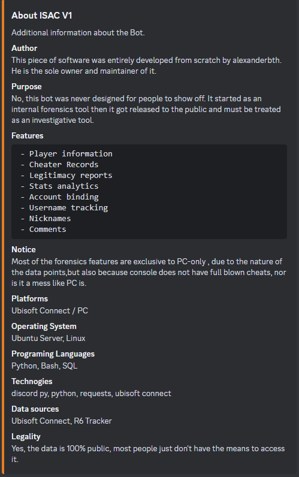
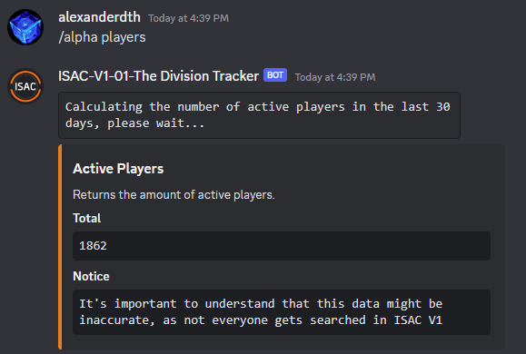
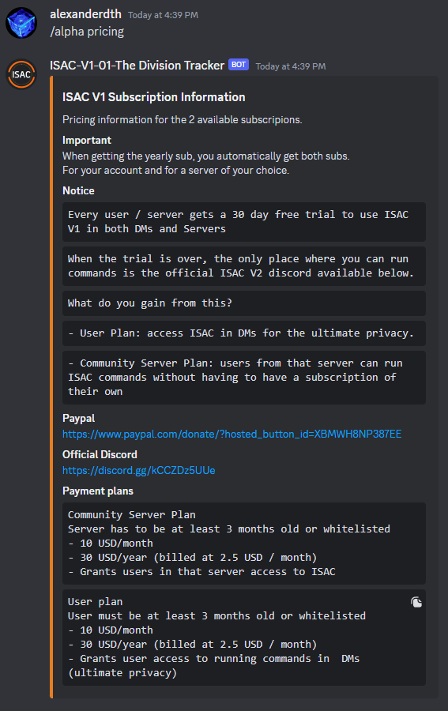
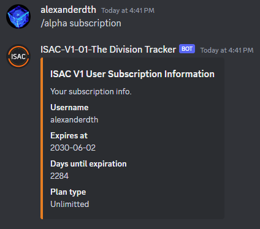
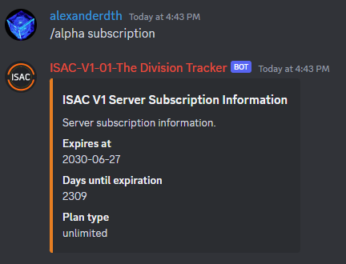
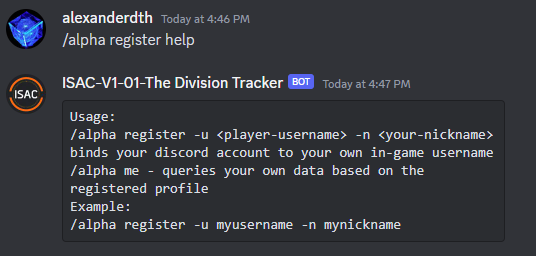
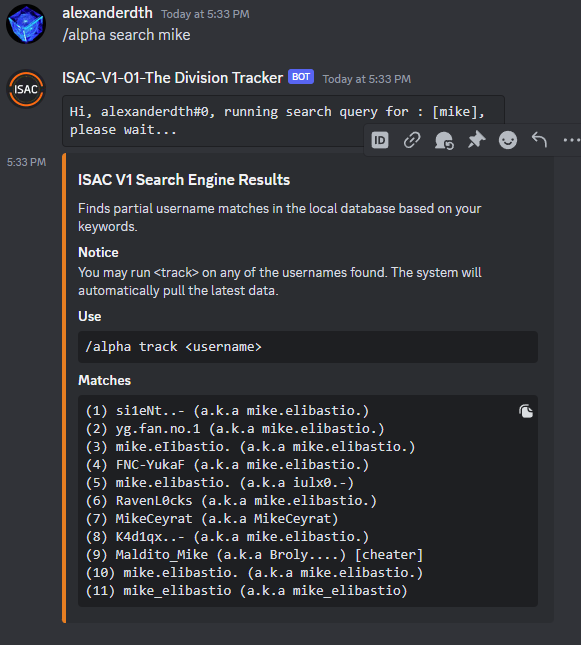
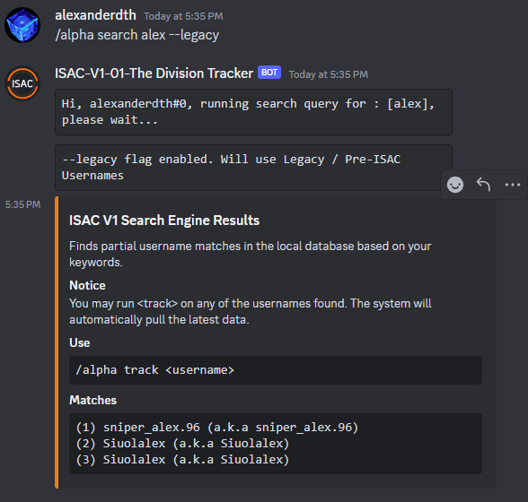
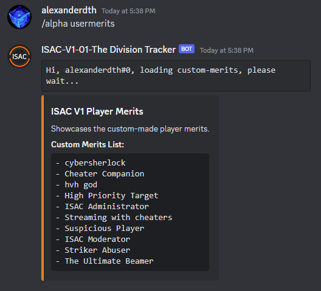
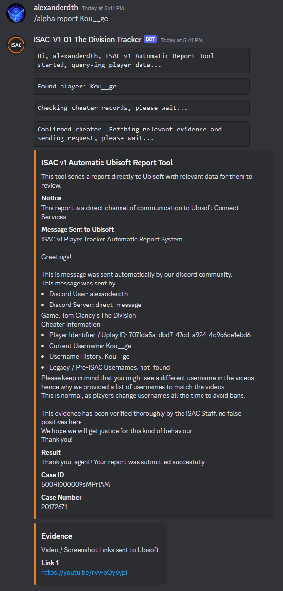

This bot is responsable for tracking players in the game Tom Clancy's The Division or Division1.
It responds to this command:
The system has a bunch of other commands that are derived from alpha. If you do not know the commands, you can
simply
run
/alpha. Upon doing this you will be shown this message:
This is the bot telling you that you need to specify a sub command of alpha. Do what it says and run:
/alpha help.
You should see this:

In other words, when you are lost and don't know what command to use, run /alpha help, and the bot
will
showcase it's helper. Very easy.
/alpha stats will showcase various database stats that are relevant to the current bot variant and
it's
global database. It will show this:

/alpha about will return information about who built the system and what technologies it's using.

/alpha me is a command which will attempt to use your profile to track yourself. In other words, you
track yourself. In order for this to work, you have to register your profile. For that, you may check the
registration step below. (Step: 7)

/alpha analyze is a command which attempts to use local data in order to perform static analysis
between
username changes. In pther words, every time someone changes name, their account information is logged and it's
bound together by something called uplay id. This ID is unique and cannot be change. It's what
allows
the system to store username changes and bind data. Leaving this explanation asside, we can use the account
snapshots to calculate differences in between them. The command can be used in 2 pars:
/alpha analyze <insert-player-here>, this will run it on a given player./alpha analyze me, this will analyze it for youself, assuming you have an ISAC Profile
registered.
(Step 7.)When running it, you should see something like this:
/alpha analyze me:
/alpha analyze <insert-player-username>:
There is a possibility that you might encounter this error:
Error performing analysis: Not enough data to analyze. There needs to be at least 2 entries in order to perform this..
Do not panic, it's normal. If the user you are trying to analyze never changed name, the system cannot perform
this,
due to the fact that it requires at least 2 data points to execute the calculations.
/alpha players will return a rough estimate of how many players are active in game based on this
month's
searches. Yes, it's not accurate, but, at least it is something.

/alpha pricing will return subscription pricing information. In other words, ISAC is free to use in
it's
official discord server. But if you want to use it in your own server, which you don't have to, but if you want,
you
will have to get a sub. Of course, everyone get's a 30 day free trial.

/alpha subscription will return subscription information for your current active plan. You can run
it in
2 ways:


/alpha register -u <insert-username-here> -n <insert-nickname-here> command, will help
you
bind your current discord account to your in-game Division account. This gives you access to:
/alpha analyze me - self-analysis/alpha me - profile trackingYour first move would be to check how you can use it. Which is very simple. /alpha register help.
This
will display it's helper:

To explain this better, it simply wants you to provide it with:
-u, which is your in-game username-n, a nickname that you want people to call you by, as it will be displayed on your profile.
/alpha register -u <insert-username-here> -n <insert-nickname-here>

Upon running that, you will see this:

/alpha unregister provides this functionality. Will not dive deep into this since it's the opposite
to
the step you find above. It will wipe your profile.

/alpha track <insert-username-here> is the most used command. You probably used it already,
it's
what gives ISAC it's power. This command connects to Ubisoft Connect Services, pulls data, passes it through
it's
filtering algorithms, stores it and then it gives it to you.

/alpha search <insert-keyword> is basically ISAC's own version of Google. Since ISAC stores
it's
data in a database, it makes it possible for users to search for it. This is useful in case you do not remember
a
name, you're lazy or you simply want to explore what you can find. It requires a simple keyword. Contrary to
/alpha track <insert-username-here>, it does not require the EXACT username, instead, you
provide
it with a keyword.

There is an additional parameter which you can send it, --legacy. ISAC has a built-in method from
grabbing older usernames. Some proviles have something listed on them that reads
Legacy / Pre-ISAC Usernames. This is essentially a list of really old names auto-grabbed. You can
"force" ISAC to search the database, based on these names.

/alpha usermerits is a command that displays custom merits, created by staff members.
Custom merits are segments of text displayed on each profile under Listed merits. The most common
ones
include:
Running that command, will output:

/alpha report <insert-cheater-username-here> is a command that will submit a report directly
to
Ubisoft on your behalf. In order to be able to do this, certain conditions must be met:

If you follow the steps from above, you will become an ISAC master. If you got any additonal questions, do not hesitate to contact the staff.